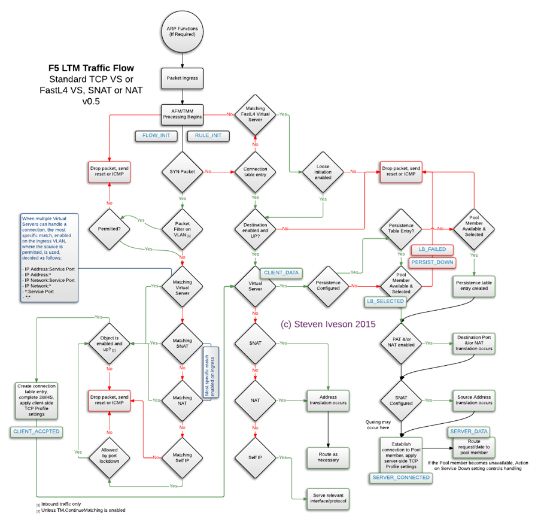
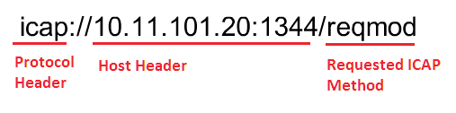

Unofficial - F5 Certification Exam Prep Material > F5 401 - Security Solution Expert Study Guide 11/01/19 Source | Edit on
Original 401 Study Guide Created by Darshan Kirtikumar Doshi¶
This document has not been updated since it’s orignial posting as a PDF by Darshan.
I have not updated this material, but am simply republishing it in this repo.
Disclaimer
The information provided in this document is designed to provide helpful information on F5 401 Security Solution Expert exam. This is an independent Study Guide, and should NOT be used as replacement to hands on experience with F5 Security products or official F5 trainings. Also this document is not intended to guarantee a passing grade on the exam.
Notice that this is NOT an official F5 document and as such not supported by F5.
Introduction This Independent Study Guide is prepared using public F5 resources and other internet resources. The exam is heavily focused on “AFM, ASM, LTM, APM and F5 DNS (formerly known as GTM)” modules. Most of the sections in the document contains hyperlink at the end of the topic. It is highly recommended to refer all the hyperlinks for detailed information about any topic.
Note: The guide will be continually improved and suggestions on the content are very welcome. If you have comments or would like to have relevant notes, and materials added to this document, please send an email to darshandkd@gmail.com
Good luck!
GENERAL / SYSTEM¶
BIG IP Packet Processing Order
The following snippet is quite useful to understand the packet processing flow at each layer of BIG-IP.
Updated on - December 2015: Source - https://devcentral.f5.com/Portals/0/Users/053/01/85301/TMOS_Order_of_Operations_v2.png
{kind=link}
BIG-IP Traffic Processing Order
A couple of pretty interesting and useful videos on YouTube for Packet Processing Order – for version 11.X - https://www.youtube.com/watch?v=bYfcNIndSPQ&t=47s for version 12.X https://www.youtube.com/watch?v=qCLEw5xIZ7s
It is strongly recommended to go through version 12.X YouTube video as it talks about all the modules listed below.
- Packet Filter
- AFM
- FLOW_INIT (An iRule Event i.e. when FLOW_INIT)
- LTM
- APM
- ASM
Note: Packet processing at different modules take place if the module is provisioned and configured.
FLOW_INIT
This event is triggered (once for TCP and unique UDP/IP flows) after packet filters, but before AFM, and TMM work occurs. The use cases for this event are:
- Override ACL action
- Bandwidth control on both client/server flows
- Routing to another Vip
- Marking qos tos/dscp on both client/server flows
Source - https://devcentral.f5.com/wiki/iRules.FLOW_INIT.ashx
The packet is first evaluated by the Packet Filter The next is FLOW_INIT, then by AFM, then by LTM , then by APM. And at last ASM processes the traffic, then hands the traffic back to LTM to finish up with. ASM sits off to the side and either tells LTM to proceed or hands out a block page.
Local Logging Directories
Source - https://support.f5.com/kb/en-us/solutions/public/16000/100/sol16197.html
BIG-IP log types
Each type of event is stored locally in a separate log file, and the information stored in each log file varies depending on the event type. All log files for these event types are in the /var/log directory.
Type Description Log file
audit: The audit event messages are messages that the BIG- /var/log/audit IP system logs as a result of changes to the BIG-IP system configuration. Logging audit events is optional.
boot: The boot messages contain information that is logged /var/log/boot.log when the system boots.
cron: When the cron daemon starts a cron job, the daemon /var/log/cron logs the information about the cron job in this file.
daemon: The daemon messages are logged by various daemons /var/log/daemon.log that run on the system.
dmesg: The dmesg messages contain kernel ring buffer /var/log/dmesg information that pertains to the hardware devices that the kernel detects during the boot process.
GSLB: The GSLB messages pertain to global traffic /var/log/gtm management events.
httpd: The httpd messages contain the Apache Web server /var/log/httpd/httpd_errors error log.
kernel: The kernel messages are logged by the Linux kernel. /var/log/kern.log
local traffic: The local traffic messages pertain specifically to the /var/log/ltm BIG-IP local traffic management events.
mail: The mail messages contain the log information from the /var/log/maillog mail server that is running on the system.
packet filter: The packet filter messages are those that result from /var/log/pktfilter the use of packet filters and packet-filter rules.
security: The secure log messages contain information related to /var/log/secure authentication and authorization privileges.
system: The system event messages are based on global Linux /var/log/messages events, and are not specific to BIG-IP local traffic management events.
TMM: The TMM log messages are those that pertain to Traffic /var/log/tmm Management Microkernel events.
user: The user log messages contain information about all /var/log/user.log user level logs.
webui: The webui log messages display errors and exception /var/log/webui.log details that pertain to the Configuration utility.
NTP peer server communication¶
Source - https://support.f5.com/csp/article/K10240
When the BIG-IP system clock is not showing the correct timezone, or the date and time is not synchronized correctly, this could be caused by incorrect NTP configuration or a communication issue with a valid NTP peer server.
When verifying the NTP peer server communication, you can use the ntpq utility. The command generates output with the fields that are explained in the following table:
| Field | Definition |
|---|---|
| prefix to the remote field |
|
| remote | The remote field is the address of the remote peer. |
| refid | The refid field is the Reference ID which identifies the server or reference clock with which the remote peer synchronizes, and its interpretation depends on the value of the stratum field (explained in the st definition). For stratum 0 (unspecified or invalid), the refid is an ascii value used for debugging. Example: INIT or STEP. For stratum 1 (reference clock), the refid is an ascii value used to specify the type of external clock source. Example: NIST refers to NIST telephone modem. For strata 2 through 15, the refid is the address of the next lower stratum server used for synchronization. |
| st | The st field is the stratum of the remote peer. Primary servers (servers with an external reference clock such as GPS) are assigned stratum 1. A secondary NTP server which synchronizes with a stratum 1 server is assigned stratum 2. A secondary NTP server which synchronizes with a stratum 2 server is assigned stratum 3. Stratum 16 is referred to as “MAXSTRAT,” is customarily mapped to stratum value 0, and therefore indicates being unsynchronized. Strata 17 through 255 are reserved. |
| t | The t field is the type of peer: local, unicast, multicast, or broadcast. |
| when | The when field is the time since the last response to a poll was received (in seconds). |
| poll | The poll field is the polling interval (in seconds). This value starts low (example: 64) and over time, as no changes are detected, this polling value increases incrementally to the configured max polling value (example: 1024). |
| reach | The reach field is the reachability register. The octal shift register records results of the last eight poll attempts. |
| delay | The delay field is the current estimated delay; the transit time between these peers in milliseconds. |
| offset | The offset field is the current estimated offset; the time difference between these peers in milliseconds. |
| jitter | The jitter field is the current estimated dispersion; the variation in delay between these peers in milliseconds. |
Example of a successful NTP peer server query¶
If the local ntpd process can communicate, or attempts to communicate with a declared NTP peer server, the output from the ntpq command appears like the following example:
# ntpq -np remote refid st t when poll reach delay offset jitter 172.28.4.133 10.10.10.251 4 u 482 1024 377 0.815 -10.010 0.345
In the previous example, the remote server information refid, stratum, delay, offset, jitter displays, indicating that the servers are successfully exchanging information. The value of 377 in the reach column indicates that the server was successfully reached during each of the last eight attempts, and the value of 482 in the when column indicates that the last response was received from the remote peer 482 seconds ago, which is within the polling interval of 1024 seconds.
Example of a failed NTP peer server query
If the local ntpd process fails to communicate with an NTP peer server, the output from the ntpq command may appear similar to the following example:
# ntpq -np remote refid st t when poll reach delay offset jitter 172.28.4.133 .INIT. 16 u - 64 0 0.000 0.000 0000.00
Note: An **st* (stratum) of 16 means that the destination NTP server is unreachable or is not considered a viable candidate.*
In this example, the remote server information (refid, stratum, delay, offset, jitter) is not available. The value .INIT. in the refid column indicates that NTP is initializing, and the server has not yet been reached. The value of 0 (zero) in the reach column indicates that the server has not been reached during any of the last eight attempts. The absence of a value in the when column indicates that no data has been received from the remote peer since the local ntpd process was started. The poll value of 64 is still at the MINPOLL value, which indicates that NTP was recently restarted.
NTP has a MINPOLL and MAXPOLL value, which it uses to determine the optimal time between updates with the reference server. If jitter is low, and there are no changes in data received, NTP automatically incrementally increases the poll value until it reaches MAXPOLL, or 1024 seconds.
Example of a successful NTP preferred peer server query
If the local ntpd process communicates or attempts to communicate with a declared preferred NTP peer server, the output from the ntpq command appears similar to the following example:
# ntpq -np
remote refid st t when poll reach delay offset jitter 172.28.4.133 10.10.10.251 4 u 482 1024 377 0.815 -10.010 0.345 172.28.4.134 10.10.10.252 6 u 482 1024 179 0.215 -1.010 0.545
In the previous example, 172.28.4.133 is the preferred server, or current time source, and is designated by the backslash symbol. Any remaining servers available for use are indicated by the ‘+’ symbol. When initially configured, NTPd can take up to a few minutes to calculate and designate the current preferred time source.
MEMCACHE
Source - https://devcentral.f5.com/articles/the-power-of-the-proxy-request-routing-memcached
By definition, Memcached is a general-purpose distributed memory caching system. It is often used to speed up dynamic database-driven websites by caching data and objects in RAM to reduce the number of times an external data source (such as a database or API) must be read.
As an example, Memcache is like load balancing Bluecoat (forward proxy) systems behind F5 systems using the CARP algorithm. Where one or Bluecoat Systems as a pool member will be load balanced and Bluecoat will not only send the web traffic outside, but also caches the responses to serve better experience to the users. Btw, Bluecoat as a vendor uses Memcache and other variant of the same for serving web content faster.
Similarly, F5 Administrator can have any other caching server or server farm as pool.
A good example of real time MEMCACHED users are facebook, google, salesforce and most of the social media websites.
However Memcache also has its own limitation. Any shared instance of memcache is insecure today. memcache doesn’t have a way to Authenticate which means that:
user1 can read anything user2 ’caches’ it also means that user1 can write anything that user2 reads (cache poisoning)
Even with latest version SASL authentication — you are authenticating to the whole cache, and can still read poison someone else’s data.
Source - https://www.cloudlinux.com/forum/forum18/topic273 (Read thread #5)
Internet Content Adaptation Protocol
ICAP Response Status Code (from RFC 3507)
| Sr. No | Method | Description |
|---|---|---|
| 1 | OPTIONS | |
| 2 | REQMOD | Can be used to ask ICAP Server to modify Requests |
| 3 | RESPMOD | Can be used to ask ICAP Server to modify Response |
| Sr. No | Status Code | Description |
|---|---|---|
| 1 | 100 | Continue after ICAP Preview, Client is still sending the request to the ICAP Server, and client should send any requests that is queued. |
| 2 | 204 | No modifications needed |
| 3 | 400 | Bad request |
| 4 | 404 | ICAP Server not found |
| 5 | 405 | Method not allowed for service (e.g., RESPMOD requested for service that supports only REQMOD). |
| 6 | 408 | Request timeout. ICAP server gave up waiting for a request from an ICAP client. |
| 7 | 500 | Server error. Error on the ICAP server, such as “out of disk space”. |
| 8 | 501 | Method not implemented. This response is illegal for an OPTIONS request since implementation of OPTIONS is mandatory. |
| 9 | 502 | Bad Gateway. This is an ICAP proxy and proxying produced an error. |
| 10 | 503 | Service overloaded. The ICAP server has exceeded a maximum connection limit associated with this service; the ICAP client should not exceed this limit in the future. |
| 11 | 505 | ICAP version not supported by server. |
ICAP has similar structure as HTTP. URL Structure example:
ICAP URI example
ICAP Header contains the type of REQUEST followed by other ICAP headers, and Client/Server requested URL as a body (i.e. ICAP Payload Origin Client request) as appears in above example. In the same way, when ICAP Response back to the Proxy Server, it indicates the response to Proxy server in ICAP Header, and Response for Original Client/Server requested URL as a body (.i.e. 403 Forbidden content response).
Creating a custom client-side ICAP profile
You create this ICAP profile when you want to use an ICAP server to wrap an HTTP request in an ICAP message before the BIG-IP system sends the request to a pool of web servers. The profile specifies the HTTP request-header values that the ICAP server uses for the ICAP message.
After you create the ICAP profile, you can assign it to an internal virtual server so that the HTTP request that the BIG-IP system sends to an ICAP server is wrapped in an ICAP message, as per the settings you specified in the ICAP profile.
Creating a custom Request Adapt profile
Source - https://support.f5.com/kb/en-us/products/big-ip_ltm/manuals/product/ltm- implementations-11-3-0/12.html
You create a Request Adapt type of profile when you want a standard HTTP virtual server to forward HTTP requests to an internal virtual server that references a pool of ICAP servers. A Request Adapt type of profile instructs the HTTP virtual server to send an HTTP request to a named internal virtual server for possible request modification.
After you perform this task, the BIG-IP system contains a Request Adapt profile that a standard HTTP virtual server can use to forward an HTTP request to an internal virtual server for ICAP traffic.
Third party Web Application Testing / Security / Auditing Tools¶
This section talks about generic security, web application testing and auditing tools. None of the tools are F5 proprietary, but it helps great to test/audit your web applications and then you can use suitable F5 modules to protect against. The section is not very detailed, If you want to browse more information you can refer “source” hyperlink or Google is your friend!
It isn’t required to have hands on practice for each of them. However to have brief knowledge about each of them is mandatory.
1. DIG
Source - http://www.cyberciti.biz/faq/linux-unix-dig-command-examples-usage-syntax/
Use dig command for DNS lookup and to query DNS name servers for various resource record.
Syntax
dig Hostname dig DomaiNameHere dig @DNS-server-name Hostname dig @DNS-server-name IPAddress dig @DNS-server-name Hostname|IPAddress
2. DIG for DNSSEC – Source - http://backreference.org/2010/11/17/dnssec-verification-with-dig/
3. NMAP
Source - https://www.cyberciti.biz/networking/nmap-command-examples-tutorials/
nmap is short for Network Mapper. It is an open source security tool for network exploration, security scanning and auditing. However, nmap command comes with lots of options that can make the utility more robust and difficult to follow for new users.
The purpose of this post is to introduce a user to the nmap command line tool to scan a host and/or network, so to find out the possible vulnerable points in the hosts. You will also learn how to use Nmap for offensive and defensive purposes.
Some NMAP examples are as following.
1: Scan a single host or an IP address (IPv4) nmap 192.168.1.1
2: Scan multiple IP address or subnet (IPv4) nmap 192.168.1.1 192.168.1.2 192.168.1.3 ## works with same subnet i.e. 192.168.1.0/24
3: Excluding hosts/networks (IPv4) nmap 192.168.1.0/24 –exclude 192.168.1.5
4: Detect remote operating system running on Host(s) nmap -O 192.168.1.1 nmap -v -O –osscan-guess 192.168.1.1
5: Scan a network and find out which servers and devices are up and running nmap -sP 192.168.1.0/24
6: Scan a host when protected by the firewall nmap -PN 192.168.1.1 nmap -PN server1.cyberciti.biz
Look for more NMAP options by clicking on the “Source”
4. HTTPWatch
Source - http://help.httpwatch.com/gettingstarted.html Tutorial - https://www.youtube.com/watch?v=bfVwj4lCfgU
HttpWatch integrates with Internet Explorer and Mozilla Firefox to provide unrivaled levels of HTTP monitoring, without the need for separately configured proxies or network sniffers. Simply interact with a web site and HttpWatch will display a log of requests and responses alongside the web page itself. It even shows interactions between the browser and its cache. Each HTTP transaction can be examined to see the values of headers, cookies, query strings and other HTTP related data.
Commercial web sites often use technologies such as HTTP compression, SSL encryption and chunked encoding to provide the best levels of security and performance. HttpWatch works with these technologies to provided a detail view of HTTP activity within Internet Explorer.
HttpWatch has two components; a plug-in used to collect, view and save HTTP traffic within IE or Firefox, and a standalone log file viewer know as HttpWatch Studio.
If you would like to go through HTTPWatch tutorian on YouTube, click on “Source2” above.
5. Cain & Able
Source - https://en.wikipedia.org/wiki/Cain_and_Abel_(software)
Cain & Abel is a password recovery tool for Microsoft Operating Systems. It allows easy recovery of several kind of passwords by sniffing the network. It is more known for Network sniffing i.e. sniffing password within LAN.
This can also create DoS Attak on the LAN network as it creates many fake packets for processing thereby making unable for other HOST to make a request on the network.
6. THC Hydra
Source - http://tools.kali.org/password-attacks/hydra
Hydra is a parallelized login cracker which supports numerous protocols to attack. It is very fast and flexible, and new modules are easy to add. This tool makes it possible for researchers and security consultants to show how easy it would be to gain unauthorized access remotely. It is known to generate effective Brute-force attack.
7. John The Ripper
Source - https://en.wikipedia.org/wiki/John_the_Ripper
John the Ripper is a free password cracking software tool. Initially developed for the Unix operating system, it now runs on fifteen different platforms (eleven of which are architecture-specific versions of Unix, DOS, Win32, BeOS, and OpenVMS).
How does John The Ripper compare to THC Hydra? THC Hydra, or simply ‘Hydra’, is another very popular password hacking tool that is often referred to in the same context as John The Ripper. The easiest way to describe the difference between John The Ripper (JTR) and THC Hydra is that JTR is an offline password cracker whilst Hydra is an online password cracker.
8. OWASP ZAP (Zed Attack Proxy)
Source - https://en.wikipedia.org/wiki/OWASP_ZAP
OWASP ZAP (short for Zed Attack Proxy) is an open-source web application security scanner. It is intended to be used by both those new to application security as well as professional penetration testers.
It is one of the most active OWASP projects and has been given Flagship status. It is also fully internationalized and is being translated into over 25 languages.
When used as a proxy server it allows the user to manipulate all the traffic that passes through it, including traffic using https.
It can also run in a ‘daemon’ mode which is then controlled via a REST Application programming interface.
This cross-platform tool is written in Java and is available in all the popular operating systems including Microsoft Windows, Linux and Mac OS X.
Some of the built in features include: Intercepting proxy server, Traditional and AJAX Web crawlers, Automated scanner, Passive scanner, Forced browsing, Fuzzer, WebSocket support, Scripting languages, and Plug-n-Hack support. It has a plugin-based architecture and an online ‘marketplace’ which allows new or updated features to be added. The GUI control panel is easy to use.
9. Burp Suite
Source - https://en.wikipedia.org/wiki/Burp_suite
Burp Suite created by PortSwigger Web Security is a Java based software platform of tools for performing security testing of web applications. The suite of products can be used to combine automated and manual testing techniques and consists of a number of different tools, such as a proxy server, a web spider, scanner, intruder, repeater, sequencer, decoder, collaborator and extender.
10. Fiddler
Source - https://en.wikipedia.org/wiki/Fiddler_(software)
Fiddler captures HTTP and HTTPS traffic and logs it for the user to review (the latter by implementing man- in-the-middle interception using self-signed certificates).[6]
Fiddler can also be used to modify (“fiddle with”) HTTP traffic for troubleshooting purposes as it is being sent or received.[5] By default, traffic from Microsoft’s WinINET HTTP(S) stack is automatically directed to the proxy at runtime, but any browser or Web application (and most mobile devices) can be configured to route its traffic through Fiddler.
Fiddler is variant of HTTPWatch. However it supports more number of features, functionalities and its free to use unlike HTTPWatch.
11. W3af
Source - http://tools.kali.org/web-applications/w3af
w3af (web application attack and audit framework) is an open-source web application security scanner. The project provides a vulnerability scanner and exploitation tool for Web applications. It provides
information about security vulnerabilities for use in penetration testing engagements. The scanner offers a graphical user interface and a command-line interface.
12. HTTrack
Source - https://en.wikipedia.org/wiki/HTTrack
HTTrack is a free and open source Web crawler and offline browser. HTTrack allows users to download World Wide Web sites from the Internet to a local computer. By default, HTTrack arranges the downloaded site by the original site’s relative link-structure. The downloaded (or “mirrored”) website can be browsed by opening a page of the site in a browser.
HTTrack is a good tool to test F5 ASM Web Scrapping feature.
HTTrack can also update an existing mirrored site and resume interrupted downloads. HTTrack is configurable by options and by filters (include/exclude), and has an integrated help system. There is a basic command line version and two GUI versions (WinHTTrack and WebHTTrack); the former can be part of scripts and cron jobs.
HTTrack can follow links that are generated with basic JavaScript and inside Applets or Flash, but not complex links (generated using functions or expressions) or server-side image maps.
Compliances and Standards
PCI-DSS (Payment_Card_Industry_Data_Security_Standard) – Source: Wikipedia
The Payment Card Industry Data Security Standard (PCI DSS) is a proprietary information security standard for organizations that handle branded credit cards from the major card schemes including Visa, MasterCard, American Express, Discover, and JCB. The PCI Standard is mandated by the card brands and administered by the Payment Card Industry Security Standards Council. The standard was created to increase controls around cardholder data to reduce credit card fraud. Validation of compliance is performed annually, either by an external Qualified Security Assessor (QSA) or by a firm specific Internal Security Assessor (ISA) that creates a Report on Compliance (ROC) for organizations handling large volumes of transactions, or by Self- Assessment Questionnaire (SAQ) for companies handling smaller volumes.
Requirements
The PCI Data Security Standard specifies twelve requirements for compliance, organized into six logically related groups called “control objectives”.
Each version of PCI DSS has divided these twelve requirements into a number of sub-requirements differently, but the twelve high-level requirements have not changed since the inception of the standard.
| Control objectives | PCI DSS requirements |
|---|---|
| Build and maintain a secure network |
|
|
|
| Protect cardholder data |
|
|
|
| Maintain a vulnerability management program |
|
|
|
| Implement strong access control measures |
|
|
|
|
|
| Regularly monitor and test networks |
|
|
|
| Maintain an information security policy |
|
FIPS (Federal Information Processing Standards) – Source: Wikipedia
Federal Information Processing Standards (FIPS) are publicly announced standards developed by the United States federal government for use in computer systems by non-military government agencies and government contractors.
FIPS standards are issued to establish requirements for various purposes such as ensuring computer security and interoperability, and are intended for cases in which suitable industry standards do not already exist.[1] Many FIPS specifications are modified versions of standards used in the technical communities, such as the American National Standards Institute (ANSI), the Institute of Electrical and Electronics Engineers (IEEE), and the International Organization for Standardization (ISO).
DAST – Dynamic Application Security Testing
Dynamic application security testing, is essentially a tool set for finding and the remediation of vulnerabilities in a web-based application. Essentially, you open up a DAST tool and feed it a url to a website or a web service, this includes web-based applications. The tool will first crawl the site, much like a search engine, and index the entire site. Then it will use this information to build out a site map and learn how to move around the site, sometimes in ways the developer didn’t intend. After figuring out ways to traverse the site, the tool will spend the bulk of its time performing attacks against the site. This includes all of the major attack types: sql injection, cross site request forgery, cross site scripting, etc., and practically any other vulnerability you can think of.
Source - https://joshcodev.wordpress.com/2013/06/12/dast-dynamic-application-security-testing/
BIG-IP ASM blocks web application attacks to help protect against a broad spectrum of threats, including the most sophisticated application-level DDoS and SQL injection attacks. It also helps secure interactive web apps that use the latest development methodologies, such as AJAX widgets, JSON payloads, and the Google Web Toolkit.
Advanced DAST integrations can scan web apps and coordinate with BIG-IP ASM to patch vulnerabilities in minutes. By integrating contextual information about incoming IP addresses and IP Intelligence service databases, BIG-IP ASM secures applications against constantly changing threats.
Source - https://www.f5.com/pdf/products/big-ip-application-security-manager-overview.pdf
Industry Standard Security terminologies¶
CIA (Confidentiality, Integrity and Availability) - Also known as the CIA triad, is a model designed to guide policies for information security within an organization. The model is also sometimes referred to as the AIC triad (availability, integrity and confidentiality) to avoid confusion with the Central Intelligence Agency. The elements of the triad are considered the three most crucial components of security.
In this context, confidentiality is a set of rules that limits access to information, integrity is the assurance that the information is trustworthy and accurate, and availability is a guarantee of reliable access to the information by authorized people.
Source - http://whatis.techtarget.com/definition/Confidentiality-integrity-and-availability-CIA
Asset – People, property, and information. People may include employees and customers along with other invited persons such as contractors or guests. Property assets consist of both tangible and intangible items that can be assigned a value. Intangible assets include reputation and proprietary information. Information may include databases, software code, critical company records, and many other intangible items.
An asset is what we’re trying to protect.
Threat
Anything that can exploit a vulnerability, intentionally or accidentally, and obtain, damage, or destroy an asset.
A threat is what we’re trying to protect against.
Vulnerability
Weaknesses or gaps in a security program that can be exploited by threats to gain unauthorized access to an asset.
A vulnerability is a weakness or gap in our protection efforts.
Risk
The potential for loss, damage or destruction of an asset as a result of a threat exploiting a vulnerability. Risk is the intersection of assets, threats, and vulnerabilities.
Source - https://www.threatanalysis.com/2010/05/03/threat-vulnerability-risk-commonly-mixed-up-terms/
OWASP
The Open Web Application Security Project (OWASP) is an online community which creates freely-available articles, methodologies, documentation, tools, and technologies in the field of web application security.
Source – Wikipedia
OWASP Top 10
The OWASP Top 10 represents a broad consensus on the most critical web application security flaws. The errors on this list occur frequently in web applications, are often easy to find, and easy to exploit.
Current OWASP Top 10 are as following.
- Injection
- Broken Authentication and Session Management (XSS)
- Cross Site Scripting (XSS)
- Insecure Direct Object References
- Security Misconfiguration
- Sensitive Data Exposure
- Missing Function Level Access Control
- Cross Site Request Forgery (CSRF)
- Using Components with Known Vulnerabilities
- Unvalidated Redirects and Forwards
Source - https://www.veracode.com/directory/owasp-top-10
LOCAL TRAFFIC MANAGER (LTM)¶
Secure Socket Layer (SSL)
Client-side traffic refers to connections between a client system and the BIG-IP system. Server-side traffic refers to connections between the BIG-IP system and a target server system:
Managing client-side SSL traffic
When you enable the BIG-IP system to manage client-side SSL traffic, the BIG-IP system terminates incoming SSL connections by decrypting the client request. The BIG-IP system then sends the request, in clear text, to a target server. Next, the BIG-IP system retrieves a clear-text response (such as a web page) and encrypts the request, before sending the web page back to the client. During the process of terminating an SSL connection, the BIG-IP system can, as an option, perform all the SSL certificate verification functions normally handled by the target web server.
Managing server-side SSL traffic
When you enable the BIG-IP system to manage server-side SSL traffic, the BIG-IP system enhances the security of your network by re-encrypting a decrypted request before sending it on to a target server. In addition to this re-encryption, the BIG-IP system can, as an option, perform the same verification functions for server certificates that the BIG-IP system can for client certificates.
SSL Bridging
Source - https://f5.com/glossary/ssl-bridging
SSL bridging is a process where a device, usually located at the edge of a network, decrypts SSL traffic and then re-encrypts it before sending it on to the Web server. SSL bridging can be useful when the edge device performs deep-packet inspection to verify that the contents of the SSL-encrypted transmission are safe, or if there are security concerns about unencrypted traffic traversing the internal network.
SSL Offloading / Termination
Source - https://f5.com/glossary/ssl-offloading
SSL offloading relieves a Web server of the processing burden of encrypting and/or decrypting traffic sent via SSL, the security protocol that is implemented in every Web browser. The processing is offloaded to a separate device designed specifically to perform SSL acceleration or SSL termination.
SSL termination capability is particularly useful when used in conjunction with clusters of SSL VPNs, because it greatly increases the number of connections a cluster can handle.
BIG-IP® Local Traffic Manager with the SSL Acceleration Feature Module performs SSL offloading.
SSL Bypass / Pass through
For compliance, any other security reason or any custom requirement, you may need to use SSL Bypass feature on F5 LTM. In this case, you don’t terminate the connection on F5 hence have minimal control to manipulate the stream of the traffic, however you can still retain Load Balancing and other L3-L4 features in place. In such scenario, content hosting or any other device in between is processing the SSL traffic, and F5 is just load balancing / packet switching / forwarding & receiving the traffic, without any visibility on stream or application traffic.
SSL Bridging vs SSL Offloading
Source - https://devcentral.f5.com/questions/ssl-bridging-vs-ssl-offloading
Client SSL profile and NO Server SSL profile on the VS = SSL Offloading Client SSL profile and Server SSL profile on the VS = SSL Bridging
Configuring the cipher strength for SSL profiles
Source - https://support.f5.com/csp/article/K13171 BIG-IP Secure Sockets Layer (SSL) profiles can use ciphers from two different SSL stacks;
The NATIVE stack is built into the Traffic Management Microkernel (TMM), and the COMPAT stack is based on the OpenSSL library.
The NATIVE stack is an optimized SSL stack that the BIG-IP system can use to leverage hardware acceleration for most SSL ciphers. F5 recommends that you use the NATIVE stack because it is suitable for most SSL connections.
Default cipher list for SSL profiles
When you configure an SSL profile on the BIG-IP system, you can manually specify the ciphers available for SSL connections, or you can use the default cipher string, DEFAULT. The default cipher string only uses SSL ciphers from the NATIVE SSL stack.
Note: When you use the ! symbol preceding a cipher, the SSL profile permanently removes the cipher from the cipher list, even if it is explicitly stated later in the cipher string. When you use the – symbol preceding a cipher, the SSL profile removes the cipher from the cipher list, but it can be added back to the cipher list if there are later options that allow it.
Example: To remove SSLv2 from the DEFAULT SSL profile, you can use the following cipher string in the SSL Profile.
DEFAULT:!SSLv2
F5 recommends that you use the DEFAULT cipher string for Client and Server SSL profiles. However, you can configure an SSL profile to use a custom cipher suite. By applying different profiles to different virtual servers, you can make Client SSL virtual servers more or less permissive than others.
For example, you can use this approach to allow only strong ciphers, thereby enforcing the PCI requirement for strong cryptography and eliminating Weak Supported SSL Ciphers Suite violations.
SSL Troubleshooting with SSLDUMP
Source - https://support.f5.com/csp/article/K10209
The ssldump utility is an SSL/TLS network protocol analyzer, which identifies TCP connections from a chosen packet trace or network interface and attempts to interpret them as SSL/TLS traffic. When the ssldump utility identifies SSL/TLS traffic, it decodes the records and displays them in text to standard output. If provided with the private key that was used to encrypt the connections, the ssldump utility may also be able to decrypt the connections and display the application data traffic.
You can use the ssldump utility to examine, decrypt, and decode SSL-encrypted packet streams managed by the BIG-IP system. The ssldump utility can act on packet streams real-time as they traverse the system, or on a packet capture file saved in the libpcap format, such as that produced by the tcpdump utility. Although it is possible for the ssldump utility to decode and display live traffic real-time as it traverses the BIG-IP system, it is rarely the most effective method to examine the voluminous and complex output of the ssldump utility. Capturing the target traffic to a file using the tcpdump utility, then decoding the file using the ssldump utility offers a better opportunity to examine the traffic in detail.
Overview of ssldump
Source - https://devcentral.f5.com/articles/troubleshooting-tls-problems-with-ssldump
ssldump -A -d -k <key file> -n -i <capture VLAN> <traffic expression>
-A Print all fields
-d Show application data when private key is provided via -k
-k Private key file, found in /config/ssl/ssl.key/; the key file can be located under client SSL profile
Scenario 1: Virtual server missing a client SSL profile
The client SSL profile defines what certificate and private key to use, a key passphrase if needed, allowed ciphers, and a number of other options related to TLS communications. Without a client SSL profile, a virtual server has no knowledge of any of the parameters necessary to create a TLS session. After you’ve configured a few hundred HTTPS virtual servers this configuration step becomes automatic, but most of us mortals have missed step at one point or another and left ourselves scratching our heads.
We’ll set up a test virtual that has all the necessary configuration options for an HTTPS profile, except for the omission of the client SSL profile. The client will open a connection to the virtual on port 443, a TCP connection will be established, and the client will send a ‘ClientHello’. Normally the server would then respond with ServerHello, but in this case there is no response and after some period of time (5 minutes is the default timeout for the browser) the connection is closed. This is what the ssldump would look like for a missing client SSL profile:
New TCP connection #1: 10.0.0.10(46226) <-> 10.0.0.20(443) 1 1 0.0011 (0.0011) C>SV3.1(84) Handshake
ClientHello Version 3.1 random[32]=
4c b6 3b 84 24 d7 93 7f 4b 09 fa f1 40 4f 04 6e
af f7 92 e1 3b a7 3a c2 70 1d 34 dc 9d e5 1b c8 cipher suites TLS_DHE_RSA_WITH_AES_256_CBC_SHA [a number of other cipher suites] TLS_RSA_EXPORT_WITH_RC2_CBC_40_MD5 TLS_RSA_EXPORT_WITH_RC4_40_MD5
Unknown value 0xff compression methods
unknown value NULL
1 299.9883 (299.9871) C>S TCP FIN
1 299.9883 (0.0000) S>C TCP FIN
Scenario 2: Client and server do not share a common cipher suite
This is a common scenario when really old browsers try to connect to servers with modern cipher suites. We have purposely configured our SSL profile to only accept one cipher suite (TLS_RSA_WITH_AES_256_CBC_ SHA in this case). When we try connect to the virtual using a 128-bit key, the connection is immediately closed with no ServerHello from the virtual server. The differentiator here, while small, is the quick closure of the connection and the ‘TCP FIN’ that arises from the server. This is unlike the behavior of the missing SSL profile, because the server initiates the connection teardown and there is no connection timeout. The differences, while subtle, hint at the details of the problem:
New TCP connection #1: 10.0.0.10(49342) <-> 10.0.0.20(443) 1 1 0.0010 (0.0010) C>SV3.1(48) Handshake
ClientHello Version 3.1 random[32]=
4c b7 41 87 e3 74 88 ac 89 e7 39 2d 8c 27 0d c0
6e 27 da ea 9f 57 7c ef 24 ed 21 df a6 26 20 83 cipher suites TLS_RSA_WITH_AES_128_CBC_SHA Unknown value 0xff
compression methods unknown value
NULL 1 0.0011 (0.0000) S>C TCP FIN
1 0.0022 (0.0011) C>S TCP FIN
For detailed read on SSLDUMP, please refer the MAN page on this URL.
https://linux.die.net/man/1/ssldump
BIG-IP DNS¶
DNS Records types
Source - https://support.f5.com/kb/en-us/products/big-ip_gtm/manuals/product/gtm_config_guide_10_1/ gtm_zfd.html
Types of resource records
This section describes the common resource records that the ZoneRunner utility supports. For information on additional resource record types, see DNS and BIND, 4th edition, Albitz and Liu.
The types of resource records are:
- SOA (Start of authority) The start of authority resource record, SOA, starts every zone file and indicates that a name server is the best source of information for a particular zone. The SOA record indicates that a name server is authoritative for a zone. There must be exactly one SOA record per zone. Unlike other resource records, you create a SOA record only when you create a new master zone file.
- A (Address) The Address record, or A record, lists the IP address for a given host name. The name field is the hosts name, and the address is the network interface address. There should be one A record for each IP address of the machine.
- AAAA (IPv6 Address) The IPv6 Address record, or AAAA record, lists the 128-bit IPv6 address for a given host name.
- CNAME (Canonical Name) The Canonical Name resource record, CNAME, specifies an alias or nickname for the official, or canonical, host name. This record must be the only one associated with the alias name. It is usually easier to supply one A record for a given address and use CNAME records to define alias host names for that address.
- DNAME (Delegation of Reverse Name) The Delegation of Reverse Name resource record, DNAME, specifies the reverse lookup of an IPv6 address. These records substitute the suffix of one domain name with another. The DNAME record instructs the Global Traffic Manager (or any DNS server) to build an alias that substitutes a portion of the requested IP address with the data stored in the DNAME record.
- HINFO (Host Information) The Host Information resource record, HINFO, contains information on the hardware and operating system relevant to the Global Traffic Manager (or other DNS).
- MX (Mail Exchanger) The Mail Exchange resource record, MX, defines the mail system(s) for a given domain.
- NS (Name Server) The name server resource record, NS, defines the name servers for a given domain, creating a delegation point and a subzone. The first name field specifies the zone that is served by the name server that is specified in the name servers name field. Every zone needs at least one name server.
- PTR (Pointer) A name pointer resource record, PTR, associates a host name with a given IP address. These records are used for reverse name lookups.
- SRV (Service) The Service resource record, SRV, is a pointer that allows an alias for a given service to be redirected to another domain. For example, if the fictional company SiteRequest had an FTP archive hosted on archive.siterequest.com, the IT department can create an SRV record that allows an alias, ftp.siterequest.com to be redirected to archive.siterequest.com.
- TXT (Text) The Text resource record, TXT, allows you to supply any string of information, such as the location of a server or any other relevant information that you want available.
BIG-IP DNS GSLB Load Balancing Methods
Source - https://support.f5.com/kb/en-us/products/big-ip_gtm/manuals/product/gtm-concepts-11-3-0/1.html
Static load balancing methods
This table describes the static load balancing methods available in BIG-IP Global Traffic Manager (GTM).
| Name | Description | Recommended Use | Wide | Preferred Method | Alternate Method | Fallback Method |
|---|---|---|---|---|---|---|
| Drop Packet | BIG-IP GTM drops the DNS request. | Use Drop Packet for
the Alternate load balancing method when you want to ensure that GTM does not offer in
a response a virtual server that is potentially unavailable. |
No | Yes | Yes | Yes |
| Fallback IP | BIG-IP GTM distributes DNS name resolution requests to a virtual server that you specify. This virtual server is not monitored for availability. | Use Fallback IP for the fallback load balancing method when you want GTM to return a disaster recovery site when the preferred and alternate load balancing methods do not return an available virtual server. | No | No | No | Yes |
| Global Availability | BIG-IP GTM distributes DNS name resolution requests to the first available virtual server
in a pool. BIG-IP GTM starts at the top of a manually configured list of virtual servers and sends requests to the first available virtual server in the list. Only when the virtual server becomes unavailable does BIG-IP GTM send requests to
the next virtual server in the list. Over time, the first virtual server in the list receives the most requests and the last virtual server in the list receives the least requests. |
Use Global Availability when you have specific virtual servers that you want to handle most of the requests. | Yes | Yes | Yes | Yes |
| None | BIG-IP GTM distributes DNS name resolution requests skipping either the next available pool in a multiple pool configuration or the current load balancing method. If all pools are unavailable, BIG-IP GTM returns an aggregate of the IP addresses of all the virtual servers in the pool using BIND. | Use None for the alternate and fallback methods when you want to limit each pool to a single load balancing method. If the preferred load balancing method fails, GTM offers the next pool in a load balancing response. | No | No | Yes | Yes |
|---|---|---|---|---|---|---|
| Ratio | BIG-IP GTM distributes DNS name resolution requests among the virtual servers in a pool or among pools in a multiple pool configuration using weighted round robin, a load balancing pattern in which requests are distributed among several resources based on a priority level or weight assigned to each resource. |
Use Ratio when you want to send twice as many connections to a fast server and half as many connections to a slow server. | Yes | Yes | Yes | Yes |
| Return to DNS | BIG-IP GTM immediately distributes DNS name resolution requests to an LDNS for resolution. | Use Return to DNS when you want to temporarily remove a pool from service. You can also use Return to DNS when you want to limit a pool in a single pool configuration to only one or two load balancing attempts. |
No | Yes | Yes | Yes |
| Round Robin | BIG-IP GTM distributes DNS name resolution requests in a circular and sequential pattern among the virtual servers in a pool. Over time each virtual server receives an equal number of requests. | Use Round Robin when you want to distribute requests equally among all virtual servers in a pool. | Yes | Yes | Yes | Yes |
| Static Persist | BIG-IP GTM distributes DNS name resolution requests to the first available virtual server
in a pool using the
persist mask with the source IP address of
the LDNS and a hash algorithm to determine the order of the virtual servers in the list. This hash algorithm orders
the virtual servers in the list differently for each LDNS that is passing traffic to the system taking into account the specified CIDR of the LDNS. Each LDNS (and thus each client) generally resolves to the same virtual server; however, when the selected
virtual server becomes unavailable, BIG-IP
GTM sends requests to another virtual server
until the original virtual server becomes available. Then BIG-IP GTM again resolves requests to that virtual server.
|
Use Static Persist when you want requests from a specific LDNS to resolve to a specific virtual server. | No | Yes | Yes | Yes |
| Topology | BIG-IP GTM distributes DNS name resolution requests using proximity-based load balancing. BIG-IP GTM determines
the proximity of the resource by comparing location information derived from the
DNS message to the topology records in
a topology statement you have configured.
|
Use Topology when you want to send requests from a client in a particular geographic region to a data center or server located in that region. | Yes | Yes | Yes | Yes |
Dynamic load balancing methods
This table describes the dynamic load balancing methods available in BIG-IP Global Traffic Manager (GTM).
| Name | Description | Wide **IP load balancing | Preferred method | Alternate method | Fallback method |
|---|---|---|---|---|---|
| Completion Rate | BIG-IP GTM distributes DNS name resolution requests to the virtual server that currently maintains the least number of dropped or timed-out packets during a transaction between a data center and the client’s LDNS. | No | Yes | No | Yes |
| CPU | BIG-IP GTM distributes DNS name resolution requests to the virtual server that currently has the most CPU processing time available. | No | Yes | No | Yes |
| Hops | BIG-IP GTM distributes DNS name resolution requests to a virtual server in the data center that has the fewest router hops from the client’s LDNS. BIG-IP GTM uses the traceroute utility to track the number of router hops between a client’s LDNS and each data center. | No | Yes | No | Yes |
| Kilobytes/ Second | BIG-IP GTM distributes DNS name resolution requests to the virtual server that is currently processing the fewest number of kilobytes per second. Use Kilobytes/Second only with virtual servers for which BIG-IP GTM can collect the kilobytes per second metric. | No | Yes | No | Yes |
| Least Connections | BIG-IP GTM distributes DNS name resolution requests to virtual servers on BIG-IP Local Traffic Manager (LTM) that currently hosts the fewest connections. Use Least Connections only with LTM servers. | No | Yes | No | Yes |
| Packet Rate | BIG-IP GTM distributes DNS name resolution requests to the virtual server that is currently processing the fewest number of packets per second. | No | Yes | Yes | Yes |
| Quality of Service | BIG-IP GTM distributes DNS name resolution requests to virtual servers based on a score assigned to each virtual server that is calculated from current performance metrics. Use Quality of Service only when you have configured BIG-IP GTM to calculate an overall score for each virtual server based on performance metrics. | No | Yes | No | Yes |
| Round Trip Time | BIG-IP GTM distributes DNS name resolution requests to the virtual server with the fastest measured round trip time between a data center and a client’s LDNS. | No | Yes | No | Yes |
| Virtual Server Score | BIG-IP GTM distributes DNS name resolution requests to virtual servers on LTM based on a user-defined ranking. Use Virtual Server Score only with LTM systems on which you have assigned scores to each virtual server. | No | Yes | Yes | Yes |
| Virtual Server Capacity | BIG-IP GTM distributes DNS name resolution requests to virtual servers in a list that are weighted by the number of available virtual servers in the pool. The pool with the most available virtual servers is sent more requests; however, over time all the virtual servers in all the pools are sent requests. If more than one virtual server has the same weight, then BIG-IP GTM distributes DNS requests among those virtual servers using the round-robin load balancing method. |
No | Yes | Yes | Yes |
DNSSEC
A good introductory read on DNSSEC - https://ds9a.nl/dnssec/
To validate the DNSSEC Domains using the “Dig” tool, you can use the +dnssec argument. If the domain’s RRs are signed by DNSSEC, you should see “ad” (Authentication Data, rfc 2535) flag set in the response. However, an RFC was written later stating that “ad” flag is not useful in DNS Security Extension (rfc 3655).
Example of “dig” for DNSSEC signed RRs, with AD flag in the response.
~ dig pir.org +dnssec +multi
; <<>> DiG 9.8.0 <<>> pir.org +dnssec +multi ;; global options: +cmd ;; Got answer: ;; ->>HEADER<<- opcode: QUERY, status: NOERROR, id: 29196 ;; flags: qr rd ra ad; QUERY: 1, ANSWER: 2, AUTHORITY: 5, ADDITIONAL: 1
;; OPT PSEUDOSECTION: ; EDNS: version: 0, flags: do; udp: 4096 ;; QUESTION SECTION: ;pir.org. IN A
;; ANSWER SECTION: pir.org. 300 IN A 173.201.238.128 pir.org. 300 IN RRSIG A 5 2 300 20110419085021 (
20110405085021 11342 pir.org. KOPkf7cbufTtAxotksChA3vh5YKCs3s+68N81ZH5hIaU EUsWhR01mCAeyqmYnT7Oj9LXqENSJIVQUfHSzCEXcYRZ joJCxHhjLD8D/pVRPcPvV6d92T7IZa9rfjf6VyYjyJld pF19zAeQQm13Trgc0JtqGs2hM5OOBXsDtMjeuzg= )
;; AUTHORITY SECTION: pir.org. 300 IN NS ns1.yyz1.afilias-nst.info. pir.org. 300 IN NS ns1.sea1.afilias-nst.info. pir.org. 300 IN NS ns1.mia1.afilias-nst.info. pir.org. 300 IN NS ns1.ams1.afilias-nst.info.= pir.org. 300 IN RRSIG NS 5 2 300 20110419085021 (
20110405085021 11342 pir.org. wV3PUz9oCmdXq1GYzkoAXk7HskW4TMMCoyaoQjHVI8J5 vMFvWnQYEfiiJQOxHZl9xt/jrDoSkO/Xn0wnGboyMq4c J6tzXGAPRWIWYoaRlti1HDk3YR1o8fm9utk4a2XgiOSR olhUaumUnQF+wjfIMdtjWCsBxGAydjQ6nNYoHxE= )
;; Query time: 476 msec ;; SERVER: 192.168.1.2#53(192.168.1.2) ;; WHEN: Tue Apr 5 18:11:22 2011 ;; MSG SIZE rcvd: 494
DNS Header Flags (There are more Flags other than listed below)
| Bit | Flag | Description | Reference |
|---|---|---|---|
| bit 5 | AA | Authoritative Answer | [RFC1035] |
| bit 6 | TC | Truncated Response | [RFC1035] |
| bit 7 | RD | Recursion Desired | [RFC1035] |
| bit 8 | RA | Recursion Available | [RFC1035] |
| bit 9 | Reserved | ||
| bit 10 | AD | Authentic Data | [RFC4035] |
| bit 11 | CD | Checking Disabled | [RFC4035] |
IP INTELLIGENCE¶
Source - https://www.youtube.com/watch?v=qewaeUu6oiI
Protection Categories
The IP Intelligence service identifies and blocks IP addresses associated with a variety of threat sources, including:
Windows exploits: Includes active IP addresses offering or distributing malware, shell code, rootkits, worms, or viruses.
Web attacks: Includes cross-site scripting, iFrame injection, SQL injection, cross domain injection, or domain password brute force.
Botnets: Includes botnet command and control channels and infected zombie machines controlled by the bot master.
Scanners: Includes all reconnaissance, such as probes, host scan, domain scan, and password brute force. Denial of service: Includes DoS, DDoS, anomalous SYN flood, and anomalous traffic detection.
Reputation: When enabled, denies access to IP addresses currently known to be infected with malware or to contact malware distribution points. Phishing: Includes IP addresses hosting phishing sites or other kinds of fraud activities, such as click fraud or gaming fraud.
Proxy: Includes IP addresses providing proxy and anonymization services, as well as The Onion Router (TOR) anonymizer addresses.
Reference - https://www.f5.com/pdf/products/ip-intelligence-service-ds.pdf
The requirements for using IP address intelligence are:
- The system must have an IP Intelligence license.
- The system must have an Internet connection either directly or through a proxy server.
- The system must have DNS configured.
- If the BIG-IP system is behind a firewall, make sure that the BIG-IP system has external access to vector.brightcloud.com using port 443. That is the IP Intelligence server from which the system gets IP Intelligence information.
To check the reputation of any specific IP address, you can follow the below steps.
Log in to the command line for the BIG-IP system.
At the prompt, type iprep_lookup IP_address where IP_address is the address whose reputation you want to verify. For example, to verify 1.1.1.1:
iprep_lookup 1.1.1.1
opening database in /var/IpRep/F5IpRep.dat size of IP reputation database = 41693298
iprep threats list for ip = 1.1.1.1 is: bit 4 - Scannersbit 5 - Denial of Service
Checking the status of the IP intelligence database
You can display the status of the IP Intelligence database to learn when it was last updated and the number of questionable IP addresses it contains.
Log in to the command line for the BIG-IP system.
To display IP intelligence database status, type tmsh show sys iprep-status. The system displays the status. Below is the sample output of the same command.
/———————————————————————–
Sys::IP Reputation Database Status
/———————————————————————–
Last time the server was contacted for updates Last time an update was received Total number of IP Addresses in the database Number of IP Addresses received in the last update
04/21/2012 09:33:31 04/21/2012 09:33:31 5516336 136
DoS Protection using IPI
Dynamic Endpoint Visibility & Enforcement (Dynamic Blacklist & Whitelist)
THE F5 DDOS PROTECTION¶
REFERENCE ARCHITECTURE
The Four Categories of DDoS
While the DDoS threat landscape is constantly evolving, F5 has found that attacks continue to fall within four attack types: volumetric, asymmetric, computational, and vulnerability-based. These attack categories have the following characteristics:
Volumetric —Flood-based attacks that can be at layer 3, 4, or 7. Asymmetric —Attacks designed to invoke timeouts or session-state changes. Computational —Attacks designed to consume CPU and memory. Vulnerability-based —Attacks that exploit software vulnerabilities.
Components of a DDoS Protection Architecture
| Attack Category | Mitigation Component |
|---|---|
| Volumetric | Cloud-Based Scrubbing Service Web Application Firewall |
| Asymmetric | Web Application Firewall |
| Computational | Application Delivery Controller Network Firewall |
| Vulnerability-Based | IP Reputation Database Intrusion Prevention/Detection Systems (IDS/IPS) Application Delivery Controller |
Multi-Tier DDoS Protection Architecture
F5 recommends a hybrid cloud on-premises DDoS solution. Volumetric attacks will be mitigated by F5 Silverline TM DDoS Protection —a service delivered via the F5 Silverline cloud-based platform.
Silverline DDoS Protection will analyze and remove the bulk of the attack traffic. Sometimes, a DDoS campaign may include application layer attacks that must be addressed on premises. These asymmetric and computational attacks can be mitigated using the network defense and application defense tiers. The network defense tier is composed of layer 3 and 4 network firewall services and simple load balancing to the application defense tier. The application defense tier consists of more sophisticated (and also more CPU-intensive) services including SSL termination and a web application firewall stack.
F5 Components and Capabilities¶
The F5 components of the DDoS Protection reference architecture include:
- Silverline DDoS Protection
- BIG-IP® Advanced Firewall ManagerTM (AFM)
- BIG-IP® Local Traffic ManagerTM (LTM)
- BIG-IP® Global Traffic ManagerTM (GTM) with DNS ExpressTM
- BIG-IP® Application Security ManagerTM (ASM)
| Cloud | Network Defense | Application Defense | DNS | |
|---|---|---|---|---|
| F5 Components | SilverLine DDoS Protection | BIG-IP AFM BIG-IP LTM | BIG-IP LTM BIG-IP ASM | BIG-IP GTM with DNS ExpressTM |
| OSI Model | Layers 3 and 4 | Layers 3 and 4 | Layer 7 | DNS |
| Capabilities | Volumetric scrubbing Traffic dashboarding | Network firewall Layer 4 load balancing IP blacklists | SSL termination Web application firewall Secondary load balancing | DNS resolution DNSSEC |
| Attacks Mitigated | Volumetric floods Amplification Protocol whitelisting | SYN floods ICMP floods Malformed packets TCP floods Known bad actors | Slowloris Slow POST Apache Killer RUDY/Keep Dead SSL attacks | UDP floods DNS floods NXDOMAIN floods DNSSEC attacks |
Ready Defense subscription as a backup cloud-scrubbing service
Many customers already have an agreement with an external DDoS scrubbing service. These organizations can also benefit from having a backup scrubbing service. Silverline DDoS Protection can be used in this manner with its Ready DefenseTM subscription. As the organization’s primary DDoS scrubber, Ready Defense can take over to either assist or completely mitigate the attack.
Always Available subscription as the primary service
Organizations can use the Silverline DDoS Protection Always AvailableTM subscription as their primary service to respond to DDoS attacks. They can replace their existing primary service or delegate their existing service to be the secondary service.
Deployment models
Silverline DDoS Protection has two main deployment models: routed configuration and F5 IP ReflectionTM.
Routed configuration is for enterprises that need to protect their entire network infrastructure. Silverline DDoS Protection leverages Border Gateway Protocol (BGP) to route all the traffic to its scrubbing and protection center, and utilizes a Generic Routing Encapsulation (GRE) tunnel to send the clean traffic back to the origin network. Routed configuration is a scalable design for enterprises with large network deployments. It does not require any application-specific configuration and provides an easy option to turn on or off Silverline DDoS Protection.
IP Reflection is an alternative asymmetric technique to provide network infrastructure protection without the need for GRE tunnels. Organizations with devices that support destination NAT can leverage IP Reflection. With IP Reflection, there is no need to change any IP address and the IP address space is not affected as it is with GRE.
Return traffic methods used by Silverline DDoS Protection include:
- (AWS) Direct Connect
- IP Reflection
- GRE tunnels
- Proxy
- Customer bundles (fiber) Source - https://f5.com/resources/white-papers/the-f5-ddos-protection-reference-architecture/mode/pdf
APPLICATION FIREWALL MODULE (AFM)¶
Reference - Learn F5 AFM getting started training.
Brief Features:
- L4 Stateful Full proxy
- IPSec, NAT, Advanced Routing, Full SSL, AVR, PSM • DDoS
- TCP, UDP, DNS, floods, HTTP
Over 80 packet types (pre-defined)
Modes of deployment:
- AFM can be deployed in two modes as following.
ADC Mode (Default) Firewall Mode
ADC Mode
Source - https://support.f5.com/kb/en-us/products/big-ip-afm/manuals/product/network-firewall-policies- implementations-12-1-0/8.html
The BIG-IP Network Firewall provides policy-based access control to and from address and port pairs inside and outside of your network. By default the network firewall is configured in ADC mode, which is a default allow configuration, in which all traffic is allowed through the firewall, and any traffic you want to block must be explicitly specified.
Firewall Mode
The BIG-IP Advanced Firewall Module (AFM) provides policy-based access control to and from address and port pairs, inside and outside of your network. In this scenario, the network firewall is configured in Firewall mode, a default deny configuration, in which all traffic is blocked through the firewall, and any traffic you want to allow must be explicitly specified.
The Classification module
The Classification Module has 2 components,
Compiler – Resides in the “Control plane” and compiles the connection table based on the policy is configured.
Classification Engine – Uses the Compiled Classifier to determine the set of rules matching a packet based on the packet contents and other relevant input. Resides in the “packet processing path, as part of TMM process”.
If “No match” found the packet gets dropped with Default Deny rule.
Context
The category of object to which the rule applies. Rules can be Global and apply to all addresses on the BIG-IP system that match the rule, or they can be specific, applying only to a specific virtual server, self IP address, route domain, or the management port.
Context is processed in this order:
- Global
- Route domain
- Virtual server/self IP Global drop or reject*
Note: You can configure the global drop or reject context. The global drop or reject context is the final context for all traffic, except Management port traffic. Note that even though it is a global context, it is not processed first, like the main global context, but last. If a packet matches no rule in any previous context, the global drop or reject rule rejects the traffic. The default global rule is global reject. *
Note: Management port traffic is not affected by the global drop or reject rule, or by global rules in general. Management port rules must be specifically configured and applied. *
The above example shows the “Context” of the multiple rules configured in the AFM System. The “Contexts” in the above example are “Global, Virtual Server, and Default”.
Request processing order
| FIREWALL CONTEXT | DESCRIPTION |
|---|---|
| Global | Global policy rules are collected in this firewall context. Global rules apply to all traffic that traverses the firewall, and global rules are checked first. |
| Route Domain | Route domain policy rules are collected in this context. Route domain rules apply to a specific route domain defined on the server. Route domain policy rules are checked after global rules. If you have not configured a route domain, you can apply route domain rules to Route Domain 0, which is effectively the same as the global rule context; however, if you configure another route domain after this, Route Domain 0 is no longer usable as a global context. |
| Virtual Server | Virtual server policy rules are collected in this context. Virtual server policy rules apply to the selected existing virtual server only. Virtual server rules are checked after route domain rules. |
| Self IP | Self IP policy rules apply to a specified self IP address on the device. Self IP policy rules are checked after route domain rules. |
| Management Port | The management port context collects firewall rules that apply to the management port on the BIG-IP® device. Management port rules are checked independently of other rules and are not processed in relation to other contexts. |
| Global Reject | The Global Reject rule rejects all traffic that does not match any rule in a previous context, excluding Management Port traffic, which is processed independently. |
Firewall Actions
| FIREWALL ACTION | DESCRIPTION |
|---|---|
| Accept | Allows packets with the specified source, destination, and protocol to pass through the current firewall context. Packets that match the rule, and are accepted, traverse the system as if the firewall is not present. |
| Drop | Drops packets with the specified source, destination, and protocol. Dropping a packet is a silent action with no notification to the source or destination systems. Dropping the packet causes the connection to be retried until the retry threshold is reached. |
| Reject | Rejects packets with the specified source, destination, and protocol. Rejecting a packet is a more graceful way to deny a packet, as it sends a destination unreachable message to the sender. For example, if the protocol is TCP, a TCP RST message is sent. One benefit of using Reject is that the sending application is notified, after only one attempt, that the connection cannot be established. |
| Accept Decisively | Allows packets with the specified source, destination, and protocol to pass through the firewall. Packets that match the rule, and
are accepted decisively, traverse the system as if the firewall is not present, and are not processed by rules in any further context after the accept decisively action applies. If you want a packet
to be accepted in one context, and not to be processed in any remaining context or by the default firewall rules, specify the accept decisively action. For example, if you want to allow all packets from Network A to reach every server behind your firewall, you can specify a rule that accepts decisively at the global context, from that Network A, to any port and address. Then, you can specify that all traffic is blocked at a specific virtual server, using the virtual server context. Because traffic from Network A is accepted decisively at the global context, that traffic still traverses the virtual server. |
Important ICMP is handled by the BIG-IP system at the global or route domain level. Because of this, ICMP messages receive a response before they reach the virtual server context. You cannot create rule for ICMP or ICMPv6 on a self IP or virtual server context. You can apply a rule list to a self IP or virtual server that includes a rule for ICMP or ICMPv6; however, such a rule will be ignored. To apply firewall actions to the ICMP protocol, create a rule with the global or route domain context. ICMP rules are evaluated only for ICMP forwarding requests, and not for the IP addresses of the BIG-IP system itself.
When you create rules on the network firewall, it is possible that a rule can either overlap or conflict with an existing rule.
Redundant rule
A rule which has address, user, region, or port information that completely overlaps with another rule, with the same action. In the case of a redundant rule, the rule can be removed with no net change in packet processing because of the overlap with a previous rule or rules.
Conflicting rule
A conflicting rule is a special case of a redundant rule, in which address, user, region or port information overlaps with another rule, but the rules have different actions, and thus conflict.
Tip: A rule might be called conflicting even if the result of each rule is the same. For example, a rule that applies to a specific IP address is considered in conflict with another rule that applies to the same IP address, if one has an Accept action and the other has an action of Accept Decisively, even though the two rules accept packets.
On a rule list page, redundant or conflicting rules are indicated in the State column with either (Redundant) or (Conflicting).
This is what the Compiler does, we discussed in “ACL Object Model”…….
DoS Protection
Source - https://support.f5.com/kb/en-us/products/big-ip_asm/manuals/product/dns-dos-firewall- implementations-11-4-0/2.html
Attack type – Defines the type of attack and sub-categories of the same.
Detection Threshold PPS – An alert. When the particular type of Category reaches to the defined “Detection of Threshold PPS”, it generates an alert (if you’ve configured external logging server with AFM, else local logging).
Detection Threshold Percent – Additional flag to determine the further aggressiveness of the attack, of a particular type of category. Here, AFM compares the current rate of the particular Category type’s attack with Last One Hour average packet rate. For example, if the average rate for the last hour is 1000 packets per second, and you set the percentage increase threshold to 100, an attack is detected at 100 percent above the average, or 2000 packets per second. When the threshold is passed, an attack is logged and reported. The system then automatically institutes a rate limit equal to the average for the last hour, and all packets above that limit are dropped. The system continues to check every second until the incoming packet rate drops below the percentage increase threshold. Rate limiting continues until the rate drops below the specified limit.
Default Internal Rate Limit - Use Specify to set a value, in packets per second, which cannot be exceeded by packets of this type. All packets of this type over the threshold are dropped. Rate limiting continues until the rate drops below the specified limit again.
Use Infinite to set No value for the threshold. This specifies that this type of attack is not rate-limited.
DNS & SIP DoS Attack Prevention
DNS DoS Mitigation
WEBSAFE/MOBILESAFE¶
A good Light Board lesson on Websafe - https://youtu.be/FoyXTfTrpgA
A good read on MobileSafe – https://www.f5.com/pdf/products/mobilesafe-datasheet.pdf
A quick read on malicious creatures.
Reference: Websafe training from Learn F5
How Web browser renders and interpret the code normally.
Reference: Web based Websafe training from Learn F5
The DOM / Elements and Scripts
Reference: Websafe training from Learn F5
The Document and its child elements contains sub-child elements. All the HTML elements i.e. Body / Head can be modified by the “script” in run time, without interaction with the web server, and can be executed solely on client browser.
In above example, the following can be add/modify or remove by the “Scripts” in run time, without user’s intervention or communicating with the web servers.
Attribute: “href”, Element:<input>, Text:”Welcome!”, Attribute:ID, Attribute: type
All of this events can happen dynamically, without a page refresh, and without another request to the web server. In short, your users may not be interacting with the application they think they are.
DOM Vulnerabilities and Security Concerns
Reference: Web based Websafe training from Learn F5 Websafe General workflow
Reference: Web based Websafe training from Learn F5
License Activation for FPS (Fraud Protection Module)
The FPS License activation can be done from the TMSH, which is 32 characters long string. FPS is a bundle of more than one protection modules i.e. Websafe / Phishing protection / Malware protection / automatic transaction detection and application encryption, and license activation is required for them as well.
WebSafe License Bundle Activation Example:
Reference: Websafe training from Learn F5
However activating Websafe license only from tmsh, you can receive the demo license key by contacting F5 concern team, a valid key will have 8 numeric characters as shown in the below example.
WebSafe License Example:
Reference: Web based Websafe training from Learn F5
You can subscribe for the license as per your requirement. Once the license is activated, you would see the following options available in the Configuration Utility.
Reference: Web based Websafe training from Learn F5
APPLICATION SECURITY MODULE (ASM)¶
Data guard Protection
Source - https://support.f5.com/kb/en-us/products/big-ip_asm/manuals/product/asm- implementations-11-5-0/9.html
In some web applications, a response may contain sensitive user information, such as credit card numbers or social security numbers (U.S. only). The Data Guard feature can prevent responses from exposing sensitive information by masking the data (this is also known as response scrubbing).
Note: When you mask the data, the system replaces the sensitive data with asterisks (****). F5 recommends that you enable this setting especially when the security policy enforcement mode is transparent. Otherwise, when the system returns a response, sensitive data could be exposed to the client.
Using Data Guard, you can configure custom patterns using PCRE regular expressions to protect other forms of sensitive information, and indicate exception patterns not to consider sensitive. You can also specify which URLs you want the system to examine for sensitive data.
The system can examine the content of responses for specific types of files that you do not want to be returned to users, such as ELF binary files or Microsoft Word documents. File content checking causes the system to examine responses for the file content types you select, and to block sensitive file content (depending on the blocking modes), but it does not mask the sensitive file content.
Data Guard examines responses that have the following content-type headers: • “text/…”
- “application/x-shockwave-flash” • “application/sgml”
- “application/x-javascript”
- “application/xml”
- “application/x-asp”
- “application/x-aspx”
- “application/xhtml+xml”
You can configure one additional user-defined response content-type using the system variable user_defined_accum_type. If response logging is enabled, these responses can also be logged.
DoS Protection
There are two types of protections you can implement for DoS in ASM.
- TPS Based DoS Protection
- Stress Based (formally known as “Latency based”) DoS Protection
Note: The averages for IP address and URL counts are done for each virtual server, not each DoS L7 profile, in case one DoS L7 profile is assigned to more than one virtual server. *
TPS Based Anomaly Protection
TPS Based DoS Protection detects DoS attacks from the client side using the following calculations: Transaction rate during detection interval
The average number of requests per second sent for a specific URL, or sent by a specific IP address. Every second, the system calculates the average TPS for the last minute (i.e. Last 60 seconds).
Here are some interesting facts about the TPS calculations. As there are two types of TPS detection, there are two different calculations.
- Transaction rate detection interval
- Transaction rate history interval
For “Transaction rate detection interval”, the ASM calculates short average for the past 1min, and for “Transaction rate history interval”, the ASM calculates long average for the past 1hour. Let’s discuss this in a little detail, read the below.
Transaction rate detection interval: The average number of requests per second sent, and it is updated every 60 seconds.
BIG-IP ASM calculates short average for the past 1min. It will be calculated 1 sec later.
For example
At 8:59:59 am, it is calculated short average per 1min between 8:58:58 am and 8:59:58 am. At 9:00:00 am, it is calculated short average per 1min between 8:58:59 am and 8:59:59 am. At 9:00:01 am, it is calculated short average per 1min between 8:59:00 am and 9:00:00 am. At 9:00:02 am, it is calculated short average per 1min between 8:59:01 am and 9:00:01 am.
Transaction rate history interval: The average number of transactions for the past hour, and it is updated every minute (i.e. 60 seconds).
BIG-IP ASM calculates long average the past 1hour. It will be calculated 1min later.
For example
At 8:59:00 am, it is calculated long average per 1hour between 7:58:00 am and 8:58:00 am. At 9:00:00 am, it is calculated long average per 1hour between 7:59:00 am and 8:59:00 am. At 9:01:00 am, it is calculated long average per 1hour between 8:00:00 am and 9:00:00 am. At 9:02:00 am, it is calculated long average per 1hour between 8:01:00 am and 9:01:00 am.
TPS Increased by Percentage:
In TPS-based detection mode, if the ratio of the *transaction rate detection interval **to the transaction rate history interval is greater than the specific percentage you configure on this screen (i.e. TPS increased by percentage), the system detects the URL to be under attack, or the IP address to be attacking. In order to stop the attack, the system blocks some, or all, requests from the detected IP address and/to the attacked URL, depending on the configuration of the DoS profile.
By using the function of “TPS increased by”, if the ASM system has just processing the traffic in less than 1 min, BIG-IP ASM will not detect any attack. In that case, the ASM system will depend on the function
“TPS reached” For IP Detection Criteria, modify the threshold values as needed. Source
Note: This setting appears only if Prevention Policy is set to Source IP-Based Client Side Integrity Defense and/or Source IP-Based Rate Limiting.
If any of these criteria is met, the system handles the attack according to the Prevention Policy settings.
| Option | Description |
|---|---|
| TPS increased by | Specifies that the system considers an IP address to be that of an attacker if the transactions sent per second have increased by this percentage, and the detected TPS is greater than the Minimum TPS Threshold for detection. The default value is 500%. |
| TPS reached | Specifies that the system considers an IP address to be suspicious if the number of transactions sent per second from an IP address equals, or is greater than, this value. This setting provides an absolute value, so, for example, if an attack increases the number of transactions gradually, the increase might not exceed the TPS increased by threshold and would not be detected. If the TPS reaches the TPS reached value, the system considers traffic to be an attack even if it did not meet the TPS increased by value. The default value is 200 TPS. |
| Minimum TPS Threshold for detection | Specifies that the system considers an IP address to be an attacker if the detected TPS for a specific IP address equals, or is greater than, this number, and the TPS increased by number was reached. The default setting is 40 transactions per second. |
For URL Detection Criteria, modify the threshold values as needed. Note: This setting appears only if Prevention Policy is set to URL-Based Client Side Integrity Defense and or URL-Based Rate Limiting.
| Option | Description |
|---|---|
| TPS increased by | Specifies that the system considers a URL to be that of an attacker if the transactions sent per second to the URL have increased by this percentage, and the detected TPS is greater than the Minimum TPS Threshold for detection. The default value is 500%. |
| TPS reached | Specifies that the system considers a URL to be suspicious if the number of transactions sent per second to the URL is equal to or greater than this value. This setting provides an absolute value, so, for example, if an attack increases the number of transactions gradually, the increase might not exceed the TPS increased by threshold and would not be detected. If the TPS reaches the TPS reached value, the system considers traffic to be an attack even if it did not meet the TPS increased by value. The default value is 1000 TPS. |
| Minimum TPS Threshold for detection | Specifies that the system considers a URL to be an attacker if the detected TPS for a specific URL equals, or is greater than, this number, and theTPS increased by number was reached. The default setting is 200 transactions per second. |
If any of these criteria is met, the system handles the attack according to the Prevention Policy settings. For Site-Wide Detection Criteria, modify the threshold values as needed. Note: This setting appears only if using site-wide prevention policies.
| Option | Description |
|---|---|
| TPS increased by | Specifies that the system considers a whole site to be under attack if the transactions sent per second have increased by this percentage, and the detected TPS is greater than the Minimum TPS Threshold for detection. . The default value is 500%. |
| TPS reached | Specifies that the system considers a whole site to be under attack if the number of requests sent per second is equal to or greater than this number. The default value is 10000 TPS. |
| Minimum TPS Threshold for detection | Specifies that the system considers a whole site to be under attack if the detected TPS is equal to or greater than this number, and the TPS increased by number was reached. The default setting is 2000 TPS. |
If any of these criteria is met, the system handles the attack according to the Prevention Policy settings.
For the Prevention Duration setting, specify the time spent in each mitigation step until deciding to move to the next mitigation step.
| Option | Description |
|---|---|
| Escalation Period | Specifies the minimum time spent in each mitigation step before the system moves to the next step when preventing attacks against an attacker IP address or attacked URL. During a DoS attack, the system performs attack prevention for the amount of time configured here for methods enabled in the Prevention Policy. If after this period the attack is not stopped, the system enforces the next enabled prevention step. Type a number between 1 and 3600. The default is 120 seconds. |
De-escalation Period
Specifies the time spent in the final escalation step until retrying the steps using the methods enabled in the Prevention Policy. Type a number (greater than the escalation period) between 0 (meaning no de-escalation) and 7200 seconds. The default value is 7200 seconds (2 hours).
DoS mitigation is reset after 2 hours even if the detection criteria still hold regardless of the value set for the De-escalation Period. If the attack is still taking place, a new attack occurs and mitigation starts over retrying the steps in the Prevention Policy. If you set the De-escalation Period to less than 2 hours, the reset occurs more frequently.
Stress-based DoS protection
When setting up DoS protection, you can configure the system to prevent DoS attacks based on the server side (stress-based detection). In stress-based detection, it takes a latency increase and at least one suspicious IP address, URL, heavy URL, site-wide entry, or geolocation for the activity to be considered an attack.
Note: The average latency is measured for each site, that is, for each virtual server and associated DoS profile. If one virtual server has multiple DoS profiles (implemented using a local traffic policy), then each DoS profile has its own statistics within the context of the virtual server.
Stress-based protection is less prone to false positives than TPS-based protection because in a DoS attack, the server is reaching capacity and service/response time is slow: this is impacting all users. Increased latency can be used as a trigger step for detecting an L7 attack. Following the detection of a significant latency increase, it is important to determine whether you need further action. After examining the increase in the requests per second and by comparing these numbers with past activity, you can identify suspicious versus normal latency increases.
Detection Criteria, modify the threshold values as needed. If any of these criteria is met, the system handles the attack according to the Prevention Policy settings.
| Option | Description |
|---|---|
| Latency increased by | Specifies that the system considers traffic to be an attack if the latency has increased by this percentage, and the minimum latency threshold has been reached. The default value is 500%. |
| Latency reached | Specifies that the system considers traffic to be an attack if the latency is equal to or
greater than this value. This setting provides an absolute value, so, for example, if an
attack increases latency gradually, the increase might not exceed the Latency Increased
by threshold and would not be detected. If server latency reaches the Latency reached value, the system considers traffic to be an attack even if it did not meet the Latency increased
by value. The default value is 10000 ms. |
| Minimum Latency Threshold for detection | Specifies that the system considers traffic to be an attack if the detection interval for a specific URL equals, or is greater than, this number, and at least one of the Latency increased by numbers was reached. The default setting is 200 ms. |
About DoS mitigation methods
When setting up either transaction-based or stress-based DoS protection, you can specify mitigation methods that determine how the system recognizes and handles DoS attacks. You can use the following methods:
JavaScript challenges (also called Client-Side Integrity Defense)
You can configure the system to issue a JavaScript challenge to analyze whether the client is using a legal browser (that can respond to the challenge) when the system encounters a suspicious IP address, URL, geolocation, or site-wide criteria. If the client does execute JavaScript in response to the challenge, the system purposely slows down the interaction. The Client Side Integrity Defense mitigations are enacted only when the Operation Mode is set to blocking.
CAPTCHA challenges
Based on the same suspicious criteria, the system can also issue a CAPTCHA (character recognition) challenge to determine whether the client is human or an illegal script. Depending on how strict you want to enforce DoS protection, you can limit the number of requests that are allowed through to the server or block requests that are deemed suspicious.
Request Blocking
You can also use can use request blocking in the DoS profile to specify conditions for when the system blocks requests. Note that the system only blocks requests during a DoS attack when the Operation Mode for
TPS-based or stress-based detection is set to Blocking. You can use request blocking to rate limit or block all requests from suspicious IP addresses, suspicious countries, or URLs suspected of being under attack.
Site-wide rate limiting also blocks requests to web sites suspected of being under attack. If you block all requests, the system blocks suspicious IP addresses and geolocations except those on the whitelist. If you are using rate limiting, the system blocks some requests depending on the threshold detection criteria set in the DoS profile.
The mitigation methods that you select are used in the order they appear on the screen. The system enforces the methods only as needed if the previous method was not able to stem the attack.
DoS Use cases & Examples
(ASM Operations guide – page #51)
Securing Web Services
Fine-tuning Advanced XML Security Policy Settings
The defense configuration in an XML profile provides formatting and attack pattern checks for the XML data. The defense configuration complements the validation configuration to provide comprehensive security for XML data and web services applications. If your XML application has special requirements, you can adjust the defense configuration settings.
The system checks requests that contain XML data to be sure that the data complies with the various document limits defined in the defense configuration of the security policy’s XML profile. The system generally examines the message for compliance to boundaries such as the message’s size, maximum depth, and maximum number of children. When the system detects a problem in an XML document, it causes the XML data does not comply with format settings violation, if the violation is set to Alarm or Block.
The XML profile is updated if you changed which SOAP methods are allowed by the security policy. If you disable a SOAP method, and a request contains that method, the system issues the SOAP method not allowed violation, and blocks the request if the enforcement mode is set to blocking.
Detecting and Preventing Web Scraping
Web scraping is a technique for extracting information from web sites that often uses automated programs, or bots (short for web robots), opening many sessions, or initiating many transactions. You can configure
Application Security Manager (ASM) to detect and prevent various web scraping activities on web sites that it is protecting.
ASM provides the following methods to address web scraping attacks. These methods can work independently of each other, or they can work together to detect and prevent web scraping attacks.
Bot detection investigates whether a web client source is human by limiting the number of page changes allowed within a specified time.
You can mitigate web scraping on the web sites Application Security Manager defends by attempting to determine whether a web client source is human or a web robot. The bot detection method also protects web applications against rapid surfing by measuring the amount of time allowed to change a number of web pages before the system suspects a bot.
The system checks for rapid surfing and if too many pages are changed too quickly, it logs Web Scraping detected violations in the event log, and specifies the attack type of bot detection.
After setting up bot detection, you can also set up fingerprinting, session opening and session transactions anomaly detection for the same security policy.
Session opening detects an anomaly when either too many sessions are opened from an IP address or when the number of sessions exceeds a threshold from an IP address. Also, session opening can detect an attack when the number of inconsistencies or session resets exceeds the configured threshold within the defined time. This method also identifies as an attack an open session that sends requests that do not include an ASM cookie.
You can configure how the system protects your web application against session opening web scraping violations that result from too many sessions originating from a specific IP address, inconsistencies detected in persistent storage, and when the number of session resets exceeds the threshold.
Note
The Detection Criteria values all work together. The minimum sessions value and one of the sessions opened values must be met for traffic to be considered an attack. However, if the minimum sessions value is not reached, traffic is never considered an attack even if the Sessions opened per second increased by value is met.
The system checks for too many sessions being opened from one IP address, too many cookie deletions, and persistent storage inconsistencies depending on the options you selected. The system logs violations in the web scraping event log along with information about the attack including whether it is a Session Opening Anomaly by IP Address or Session Resets by Persistent Client Identification
attack type and when it began and ended. The log also includes the type of violation (Device Identification Integrity or Cookie Deletion Detection) and the violation numbers.
Session transactions anomaly captures sessions that request too much traffic, compared to the average amount observed in the web application. This is based on counting the transactions per session and comparing that to the average amount observed in the web application.
You can configure how the system protects your web application against harvesting, which is detected by counting the number of transactions per session and comparing that number to a total average of transactions from all sessions. Harvesting may cause session transaction anomalies.
When the system detects a session that requests too many transactions (as compared to normal), all transactions from the attacking session cause the Web Scraping detected violation to occur until the end of attack or until the prevention duration expires.
Fingerprinting captures information about browser attributes to identify a client. It is used when the system fails to detect web scraping anomalies by using IP addresses, ASM cookies, or persistent device identification.
Fingerprinting is collecting browser attributes and saving the information in a special POST data parameter. The system can use the collected information to identify suspicious clients (potential bots) and recognize web scraping attacks more quickly.
The system now collects browser attributes to help with web scraping detection. If you also enabled the Suspicious Clients setting, when the system detects clients that may be web scraping attempts using information obtained by fingerprinting, the system records the attack data, and blocks the suspicious requests.
Suspicious clients used together with fingerprinting, specifies how the system identifies and protects against potentially malicious clients; for example, by detecting scraper extensions installed in a browser.
The BIG-IP system can accurately detect web scraping anomalies only when response caching is turned off.
Prerequisites for configuring web scraping
For web scraping detection to work properly, you should understand the following prerequisites:
- The web scraping mitigation feature requires that the DNS server is on the DNS lookup server list.
- Client browsers need to have JavaScript enabled, and support cookies for anomaly detection to work.
- Consider disabling response caching. If response caching is enabled, the system does not protect cached content against web scraping.
- The Application Security Manager does not perform web scraping detection on legitimate search engine traffic. If your web application has its own search engine, we recommend that you add it to the system.
- Web scraping attack types
- Web scraping statistics specify the attack type so you have more information about why the attack occurred. This shows the web scraping attack types that can display in the web scraping event log.
| Attack Type | Description |
|---|---|
| Bot activity detected | Indicates that there are more JavaScript injections than JavaScript replies. Click the attack type link to display the detected injection ratio and the injection ratio threshold. Note: You cannot configure the Bot activity detected ratio values. This attack type can occur only when the security policy is in Transparent mode. |
| Bot Detected | Indicates that the system suspects that the web scraping attack was caused by a web robot. |
| Session Opening Anomaly by IP | Indicates that the web scraping attack was caused by too many sessions being opened from one IP address. Click the attack type link to display the number of sessions opened per second from the IP address, the number of legitimate sessions, and the attack prevention state. |
| Session Resets by Persistent Client Identification | Indicates that the web scraping attack was caused by too many session resets or inconsistencies occurring within a specified time. Click the attack type link to display the number of resets or inconsistencies that occurred within a number of seconds. |
| Suspicious Clients | Indicates that the web scraping attack was caused by web scraping extensions on the browser. Click the attack type link to display the scraping extensions found in the browser. |
| Transactions per session anomaly | Indicates that the web scraping attack was caused by too many transactions being opened during one session. Click the attack type link to display the number of transactions detected on the session. |
User and Session Tracking
Overview: Tracking user sessions using login pages
You can track user sessions using login pages configured from within Application Security Manager (ASM), or have the policy retrieve the user names from Access Policy Manager (APM). This implementation describes how to set up session tracking for a security policy using login pages. The advantage of using session tracking is that you can identify the user, session, or IP address that instigated an attack.
Login pages, created manually or automatically, define the URLs, parameters, and validation criteria required for users to log in to the application. User and session information is included in the system logs so you can track a session or user. The system can log activity, or block a user or session if either generates too many violations.
If you configure session awareness, you can view the user and session information in the application security charts.
Monitor user and session information
Source - https://devcentral.f5.com/questions/session-tracking-with-asm-block-all-vs-delay-blocking-50479
To monitor user and session information, you first need to set up session tracking for the security policy.
You can use the reporting tools in Application Security ManagerTM to monitor user and session details, especially when you need to investigate suspicious activity that is occurring with certain users, sessions, or IP addresses.
The Session Tracking Status screen opens and shows the users, sessions, and IP addresses that the system is currently tracking for this security policy.
1. From the Action list, select the action by which to filter the data.
| ACTION | DESCRIPTION |
|---|---|
| All | Specifies that the screen displays all entries. This is the default value. |
| Block All | Specifies that the system displays sessions whose requests the system blocks after the configured threshold was reached. |
| Log All Requests | Specifies that the system displays sessions whose requests the system logs after the configured threshold was reached. |
| Delay Blocking | Specifies that the system displays sessions whose requests the system delayed blocking until the configured threshold was reached. |
The difference between “block all” and “delay blocking” is that with delay blocking you can defer blocking of a session or an IP address because you want to tolerate a low volume of violations, instead of immediately blocking any request that violates the policy. In many cases there is a forensic reason for doing this, in the event that you wish to observe the actions of a specific client. By not tracking “user name” you will not be able to view user names or login pages specifically, but ASM will still track HTTP session information.
2. From the Scope list, specify the scope (username, session, or IP address) by which to filter the data.
| OPTION | DESCRIPTION |
|---|---|
| Alt | Specifies that the screen displays all entries. This is the default value. |
| Username | Specifies that the system displays usernames whose illegal requests exceeded the security policy’s threshold values. |
| Session | Specifies that the system displays identification numbers of illegal sessions that exceeded the security policy’s threshold values. |
| IP Address | Specifies that the system displays IP addresses where illegal requests from these IP addresses exceeded the security policy’s threshold values. |
APPLICATION POLICY MODULE (APM)¶
Portal Access
Source - https://support.f5.com/kb/en-us/products/big-ip_apm/manuals/product/apm-portal- access-12-0-0/2.html
Portal access enables end users to access internal web applications with a web browser from outside the network. With portal access, the BIG-IP® Access Policy Manager® communicates with back-end servers, and rewrites links in web application pages so that further requests from the client browser are directed back to the Access Policy Manager server. With portal access, the client computer requires no specialized client software other than a web browser.
Portal access provides clients with secure access to internal web servers, such as Microsoft® Outlook®Web Access (OWA), Microsoft SharePoint®, and IBM® Domino® Web Access. Using portal access functionality, you can also provide access to most web-based applications and internal web servers.
Portal access differs from network access, which provides direct access from the client to the internal network. Network access does not manipulate or analyze the content being passed between the client and the internal network. The portal access configuration gives the administrator both refined control over the applications that a user can access through Access Policy Manager, and content inspection for the application data. The other advantage of portal access is security. Even if a workstation might not meet requirements for security for full network access, such a workstation can be passed by the access policy to certain required web applications, without allowing full network access. In a portal access policy, the client computer itself never communicates directly with the end-point application. That means that all communication is inspected at a very high level, and any attacks originating on the client computer fail because the attack cannot navigate through the links that have been rewritten by the portal access engine.
Portal access configuration elements
A portal access configuration requires:
- A portal access resource including one or more portal access resource items
- An access profile
- An access policy that assigns:
A portal access resource
A portal access or full webtop
- A rewrite profile (you can use the default rewrite profile)
- A connectivity profile
- A virtual server that assigns the access profile and a rewrite profile
Portal access elements are summarized in the following diagram.
Understanding portal access patching
Portal access patches, or rewrites, links in web content. Portal access rewrites links in complex JavaScriptTM, Flash®, CSS, and HTML. In full patching mode, Access Policy Manager® retrieves content from back-end servers and rewrites links in that content so it can be presented to a web browser, as if the content originated from the Access Policy Manager. Portal access rewrites content to make intranet targets resolvable, no matter what the intranet host is.
Understanding full patching mode
In full patching mode, you can select one or more of the following content types in which portal access rewrites links.
| Patching content type | Description |
|---|---|
| HTML patching | Rewrites links in HTML content to redirect to the Access Policy Manager®. |
| JavaScript patching | Rewrites link content in JavaScript code to redirect requests to the Access Policy Manager. |
| CSS patching | Rewrites links to CSS files, and within CSS content, to redirect to the Access Policy Manager. |
| Flash patching | Rewrites links in Flash movies and objects to redirect requests to the Access Policy Manager. |
SAML (Security Assertion Markup Language)
SAML can be useful to access multiple services using “assertion” (as an authenticated token) for authentication, rather than traditional username and password. SAML can be implemented for on-premises as well as off-premises (SaaS) or applications hosted in cloud.
In general analogy, assertion means validating your identity with authentic fact or belief. For example, at many places you require to present your national ID / Passport etc to access to certain places / services. In Digital world, precisely in SAML, assertion means the same. Presenting valid assertion is mandatory before Service Provider grants the access to the hosted services.
SAML consist of 3 different components as following. • User
- Identity Provider (IdP)
- Service Provider (SP)
User – The entity which access the services.
IdP – The entity which authenticates and assigns the “assertion” post successful authentication and passes the assertion (token) to SP (Service Provider) to grant the user access (if require) based on the “Access Control” associated with the user privileges.
IdP then keeps the authenticated session for further use in the memory.
SP - The entity which hosts the services. Such as Office 365 / Salesforce / WebEx etc.
SAML Metadata
SAML metadata specifies how configuration information is defined and shared between two communicating entities: a SAML Identity Provider (IdP) and a SAML service provider.
Service provider metadata provides information about service provider requirements, such as whether the service provider requires a signed assertion, the protocol binding support for endpoints (AssertionConsumerService) and which certificates and keys to use for signing and encryption.
IdP metadata provides information about IdP requirements, such as the protocol binding support for endpoints (SingleSignOnService), and which certificate to use for signing and encryption.
Federation
Source - https://www.youtube.com/watch?v=De321sSQf54
APM systems operate with one another when one APM system is configured as an IdP and other APM systems are configured as service providers. This allows a user to authenticate with one APM acting as an IdP, and then use any number of APM systems, serving as service providers, without having to re-authenticate.
IdP-initiated and service provider-initiated client connections Access Policy Manager supports client connections that initiate at the IdP or at the service provider.
BIG IP APM - SECURE WEB GATEWAY (SWG)¶
A Secure Web Gateway (SWG) explicit forward proxy deployment provides an easy way to handle web requests from users. For explicit forward proxy, you configure client browsers to point to a forward proxy server. A forward proxy server establishes a tunnel for SSL traffic. Other virtual servers (wildcard SSL and wildcard forwarding IP virtual servers) listen on the tunnel. The listener that best matches the web traffic directed to the forward proxy server handles the traffic.
In any deployment of explicit forward proxy, you must consider how best to configure browsers on client systems to point to the proxy server and how to configure your firewall to prevent users from bypassing the proxy. This implementation does not explain how to do these tasks. However, here are some best practices to consider.
| Configuration | Recommendation |
|---|---|
| Client browser | Consider using a group policy that points to a Proxy Auto-Configuration (PAC) file to distribute the configuration to clients and periodically update it. |
| Firewall | A best practice might be to configure the firewall to trust outbound connections from Secure Web Gateway only. Note that possibly not all applications will work with a firewall configured this way. (Secure Web Gateway uses ports 80 and 443.) |
BIG-IP® Access Policy Manager® Secure Web Gateway (SWG) implements a secure web gateway by adding access control, based on URL categorization, to forward proxy. The access profile supports both transparent and explicit forward proxy modes. The access policy includes support for using a captive portal to collect credentials for transparent forward proxy mode and HTTP 407-based credential capture for explicit forward proxy mode. In addition to user identification by credentials, SWG provides the option to identify users transparently, providing access based on best effort identification. SWG also supports SSL traffic inspection.
The benefits that SWG provides include:
- URL filtering capability for outbound web traffic.
- Identifying malicious content and providing the means to block it.
- Applying web application controls for application types, such as social networking and Internet communication in corporate environments.
- Monitoring and gating outbound traffic to maximize productivity and meet business needs.
- User identification or authentication (or both) tied to monitoring, and access control compliance and accountability.
- Visibility into SSL traffic.
- BIG IP APM Secure Web Gateway terminology
- Here are some common terms as defined within the context of BIG-IP®APM Secure Web Gateway (SWG).
| TERM | DEFINITION |
|---|---|
| application templates | An application template is a collection of parameters (in the form of F5® iApps® templates) that an administrator defines to create a configuration, such as configuration objects for explicit or transparent forward proxy or for communication between the BIG-IP® system and the F5 DC Agent. |
| explicit forward proxy | Traffic goes directly from the client browser to the forward proxy server. The forward proxy configuration takes place in the client browser, either manually or using a Proxy Auto-Configuration (PAC) file. |
| F5 DC Agent | The F5® DC Agent is an optional program that runs on a Windows-based server in your network. As users log on to Windows domains, the agent makes a best effort to map IP addresses to user names and send them to Secure Web Gateway (SWG). |
| IF-MAP server | When you configure the BIG-IP system to communicate with the F5 DC Agent, IP address and user name pairs are stored on the BIG-IP system in an IF-MAP server. |
| transparent forward proxy | The administrator can place the BIG-IP system right in the path of traffic (inline) as the next hop after the gateway, or can use policy-based routing or Web Cache Communication Protocol (WCCP) to send traffic for ports 80 and 443 to Secure Web Gateway. |
| transparent user identification | The Transparent Identity Import access policy item obtains the IP-address- to-username-mapping from the IF-MAP server. Alone or by pairing this item with another query to look up the user or validate user information, you can allow access through the proxy without requesting credentials. Transparent user identification is not authentication; use it only when you are comfortable accepting a best effort at identifying a user. |
Flowchart for SWG Configuration
BIG IQ¶
F5® BIG-IQ® Centralized Management is an intelligent framework for managing F5 security and application delivery solutions. BIG-IQ Centralized Management provides a central point of control for F5 physical and virtual devices as well as for the following BIG-IP software modules:
- BIG-IP® Local Traffic ManagerTM (LTM)
- BIG-IP® Application Security ManagerTM (ASM)
- BIG-IP® Advanced Firewall ManagerTM (AFM)
- BIG-IP® Access Policy Manager® (APM)
- F5 WebSafeTM and F5 MobileSafe® (monitoring only)
F5 BIG-IQ Centralized Management is ideal for organizations that require central management of F5 devices and modules, license management of BIG-IP virtual editions (VEs), or central reporting and alerting on application availability, performance, and security. BIG-IQ Centralized Management employs role-based access control (RBAC), empowering application and security teams to manage their own applications while helping to maintain consistent policies and procedures across the enterprise.
Central logging, reporting, and auditing
BIG-IQ Centralized Management is a single solution for logging, reporting on, and auditing your F5 devices. Using BIG-IQ Centralized Management to log BIG-IP APM, WebSafe, or BIG-IP ASM events requires a BIG-IQ Logging Node. Speak to your F5 sales representative for details.
Functions for device management
- Centralized software upgrades—Centrally manage BIG-IP upgrades (from TMOS versions 10.2.0 and above) by uploading TMOS releases into BIG-IQ Centralized Management and directing the upgrade process for managed BIG-IP devices from one place. The BIG-IQ Centralized Management upgrade wizard guides you through the process and guards against common upgrade errors.
- License management—Centrally manage BIG-IP VE licenses, granting and revoking licenses as business needs change. Gain the flexibility to license devices only as needed, maximizing the return on your BIG-IP investment. Assign different license pools to different applications or tenants for more flexible provisioning.
- Utility license usage reporting—Enable utility licensing of BIG-IP devices by generating and delivering reports of device use over time.
- Device discovery and monitoring—Discover, track, and monitor all BIG-IP devices—whether physical or virtual—including key metrics such as CPU/memory and disk usage and high availability status. The cluster view shows trust domains, sync groups, and failover groups.
- Configuration, backup, and restore—Use BIG-IQ Centralized Management as a central repository of BIG-IP configuration files (UCS), and backup and restore system information on demand or as a scheduled process.
- BIG-IP device cluster support—Monitor high availability (HA) and clusters for BIG-IP devices.
- SSL monitoring—Track and receive alerts on the status of SSL certificates.
Source - https://www.f5.com/pdf/products/big-iq-datasheet.pdf
F5 VULNERABILITY RESPONSE POLICY AND SECURITY AUDIT¶
Reporting suspected vulnerabilities
F5 welcomes any reports of suspected vulnerabilities or other security concerns with our products.
If you are an F5 customer with an active support contract, please contact F5 Technical Support via our customer portal, or by phone.
If you are not an F5 customer, please send an email to f5sirt@f5.com. You will be contacted by an engineer who will provide you with various options for secure communication, and work with you to gather the necessary details to determine an appropriate course of action.
In cases where responsible disclosure is followed, and at the reporter’s request, F5 will provide attribution to reporters within a public AskF5 article.
Vulnerability categories
F5 investigates and prioritizes reports based on the potential exploitability of the vulnerability. F5 divides security vulnerabilities into the six categories listed in the following table. For software releases that are within their standard support phase, F5 provides the resolutions listed in the Action column whenever technically feasible. In rare cases, when F5 cannot provide the listed resolution on a specific version due to technical limitations, customers may need to upgrade to a different software version to receive the fix.
| Severity | Description | Action |
|---|---|---|
| Not Vulnerable | A product declared by F5 as not vulnerable cannot be exploited through the mechanism listed. | None |
| Low | A vulnerability that may cause an information leak or other minor effects. | May fix the vulnerability in a future release. |
| Medium | A vulnerability that may affect an authenticated user, but has mitigating circumstances. Examples include XSS scripting vulnerabilities available to authenticated users. | Where technically feasible, the vulnerability will be fixed in the next available Major, Minor, or Maintenance release. |
| High | A vulnerability that may affect an authenticated user and could result in escalation of privilege. Examples include CSRF vulnerabilities, SQL injections, and other major vulnerabilities. | Where technically feasible, the vulnerability will be fixed in the next available Major, Minor, or Maintenance release. |
| Severe | A major vulnerability that may be exploited without authentication or has serious system implications, such as a denial-of-service (DoS). | Where technically feasible, the vulnerability will be fixed in the next available Major, Minor, or Maintenance release, and hotfixes will be created for select supported releases in the next available Cumulative Hotfix. |
|---|---|---|
| Critical | A major vulnerability resulting in code execution that can be exploited without authentication. Examples include Heartbleed and Shellshock. | Where technically feasible, the vulnerability will be fixed in the next available Major, Minor, or Maintenance release, and hotfixes will be created for all supported releases as quickly as possible. |
Security hotfixes
F5 is committed to evaluating software within its Standard Support Phase at the time of public disclosure of the issue. For information about supported versions, refer to K8986: F5 software life cycle policy.
When critical or severe vulnerabilities are discovered, F5 implements, tests, and releases security hotfixes for the supported versions of software where technically feasible per the Action column in the previous table. For additional information regarding the F5 critical issue hotfix policy, refer to K4918: Overview of the F5 critical issue hotfix policy.
Vulnerability databases
F5 is committed to staying up-to-date on all of the known security vulnerabilities, and actively monitors and participates in the following vulnerability databases:
- CERT Coordination Center (CERT/CC)
- CVE (Common Vulnerabilities and Exposures)
F5 actively monitors and responds to the following databases:
- Full Disclosure
- Red Hat Security Mailing List
- CentOS Security
Note: Numerous vulnerability databases exist on the Internet. F5 participates in only vulnerability database sites that have a closed-loop notification and feedback system in place. If you are monitoring vulnerabilities from a different database and discover a vulnerability with an F5 product, check the vulnerability database sites to which F5 subscribes, to determine whether the vulnerability has been addressed. If the issue has not been addressed, please notify F5 Technical Support.
Security Updates mailing list
F5 maintains a mailing list for announcements that relate to security issues. To subscribe, visit the AskF5 Publication Preference Center page, provide your email address, select the Security Alerts check box, and then click Submit. You will receive a confirmation.
Source - https://support.f5.com/csp/article/K4602?sr=12234302
CASE STUDIES
In 401, you will find quite some subsequent questions on case studies. You may have 4-5 different case studies and 4-5 questions per case study. I have tried to make some examples which can help you to get a brief idea to deal with them.
F5 401 SSE Exam Blueprint v2 will soon be having a case studies section. You can also browse more case studies over there.
Caution!
None of the case studies are derived from the exam. The purpose to create this section is to share more realistic experience to prepare better for the exam.
Some of examples are:
Case study 1:
An organization has following Challenges:
- High volumes of SSL traffic during online promotions
- Securing service availability in heavy traffic
- Protecting against web vulnerabilities and DDoS attack
Answer the following questions based on above case study.
1. Which modules of F5 can help customer to overcome the described challenges?
- Which DDoS feature can help customer to mitigate the attack?
- Would you advise Web Scrapping or bot defense?
4. Can Websafe be helpful? If yes, which features of Websafe you can incorporate?
Case study 2:
An organization has following challenges:
- Limited rack space for moving into private cloud
- Authentication for email system on Office 365
- Replace old authentication and SSL VPN systems
Answer the following questions based on above case study.
- Which modules of F5 are suitable for the requirement?
- Which platform do you recommend to customer considering limited rack space?
- Which multi-factor authentication can be helpful for secure web application access?
- How would you design your VPE for this requirement in APM?
- Which multi factor auth would you suggest?
Case study 3:
An organization has following challenges:
- Deliver fast, quality services for customers
- Ensure high application availability
- Adapt to support new applications and business growth
Answer the following questions based on above case study.
- Which modules of F5 can help to resolve all the challenges?
2. How can you ensure highest possible uptime and low latency to the users while accessing real time applications?
3. How can you ensure high availability and low latency of the application for the users coming from different geo locations?
Case study 4:
An organization has following challenges:
- Customer demand for faster services
- Firewall bottlenecks in the current system
- Continued support for multihoming and ISP line redundancy
- Need for enhanced security
Answer the following questions based on above case study.
- Which module of modules of F5 can help to resolve all the challenges?
2. CGNET or PEM can be helpful? Yes? How? No? which other features can accommodate all the needs?
- For enhanced security, what additional features can be leveraged?
Case study 5:
An organization has following challenges:
- Ensure constant security, reliability and data integrity, with attention to those transmitted to suppliers and customers and published externally through web services (such as portals for the PA)
- Reduce costs and rationalize the management of resources
- Enhance the performance of a growing number of services, eliminating potential downtime or operational delays.
Answer the following questions based on above case study.
- Which module of modules of F5 can help to resolve all the challenges?
2. Which features of APM can be useful? Can you use SSL VPN? Portal access with/without rewrite?
- How would you advise on AAA?
Case study 6:
An organization has following challenges:
- Downtime caused by DDoS activity
- Limited in-house cloud security expertise
- Inadequate visibility into attacks
Answer the following questions based on above case study.
1. Which services or modules would you advise to address listed challenges?
2. Which DDoS solutions offered by F5 can be useful to mitigate the attack as described in the case study?
- Would you advise customer to use Session tracking in ASM?
- Can Silverline DDoS defense be helpful to mitigate the attack?
Case study 7:
An organization has following challenges:
- Limited rack space for moving into private cloud
- Authentication for email system on Office 365
- Replace old authentication and SSL VPN systems
Answer the following questions based on above case study.
1. Which services or modules would you advise to address listed challenges?
- Can APM be integrated with the current requirement?
- What if customer uses SAML?
- How can you place APM in that scenario? Can it be IdP or IsP?
- How would you deal with SAML metadata configuration?
Note: All the above case studies are extracted from “Customer stories”, on F5 website. You can refer more customer stories on the following. https://f5.com/solutions/customer-stories
All the best!!